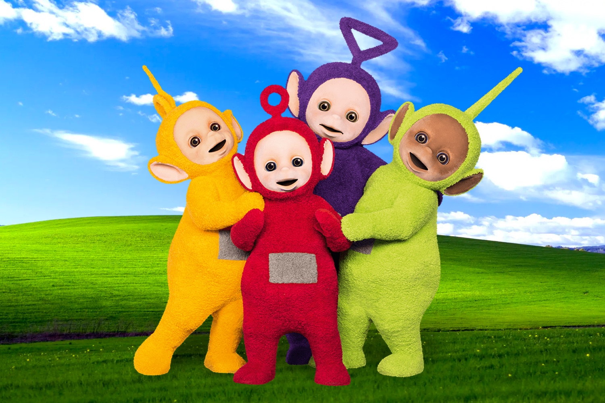

Noticia de última hora, Pedro Sanchez lo ha confirmado
Teletubbies son: "Tinky Winky, Dipsy, Lala y Po"
11/02/2022 4:20
Teletubbies fue un programa de televisión de la cadena británica BBC, con contenidos orientados a los bebés y niños de edad preescolar, producido por Ragdoll Productions. Fue creado por Anne Wood CBE,